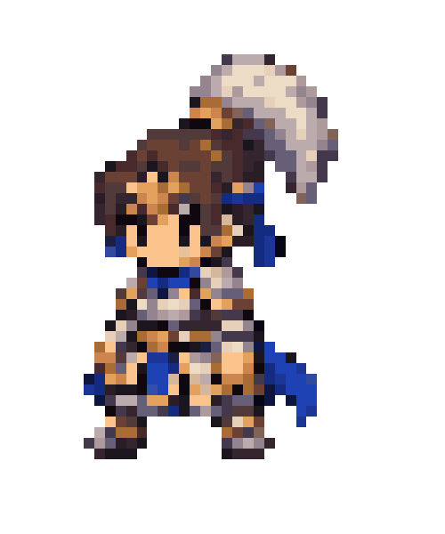
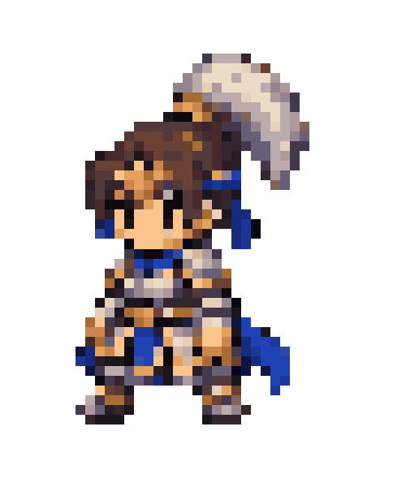
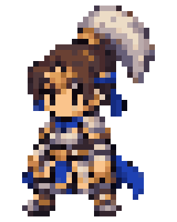

390×844 手機畫面、DPR 3、Idle、視角 2、100%（標稱每素材像素放大 4 CSS px）。以下為瀏覽器截圖相同座標裁切，沒有縮放或銳化截圖。可點圖後放大查看。


Canvas 內部尺寸由 92×91 改為 1098×1088。新版每個素材像素對應 12 個實體像素，不經低解析畫布的 CSS 拉伸。角色區域沒有新增插值顏色；非 12 整數倍的水平色塊由 563 段減至 0 段（統計完整角色截圖，排除頁面文字）。

圖集與動畫資料完全未改。原 PNG 為 32 色、alpha 0/255、透明 RGB 全為 0。來源草圖有繪製／取樣形成的色階與低解析細節；Renderer 不會補回不存在的細節，本輪沒有修改它們。
保留 Nearest Filtering、關閉 Mipmaps、抗鋸齒及後處理。檢查 1×／2×／3×／4×，DPR 1、2、3、2.625，Idle／Walk／Rotate 的實際 framebuffer：只有原圖集色盤，色塊寬度為整數像素倍數。手機觸控直向／橫向回歸測試通過；真實 iPhone Safari 未驗證。